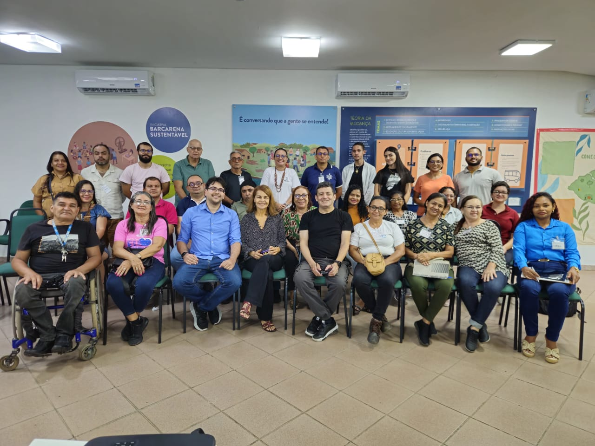

Conheça o ODSB — sua missão, metodologia, dimensões e as fontes que sustentam nossas análises.
O ODSB objetiva desenvolver um Sistema de Informações para o município de Barcarena, integrando diversas dimensões do desenvolvimento sustentável. Esse sistema será atualizado periodicamente com dados extraídos de fontes de órgãos de controle e pesquisa, como IBGE, IPEAData, Atlas da Violência, Secretaria da Fazenda (SEFA), Fundação de Pesquisa do Estado do Pará (Fapespa), Datasus, Secretaria de Comércio Exterior do Ministério da Economia, Tribunal de Contas dos Municípios (TCM), Índice de Desenvolvimento Sustentável das Cidades (IDSC), Secretarias municipais de Barcarena, além de relatórios e balanços anuais de empresas atuantes no município, entre outras bases confiáveis.
O sistema deve oferecer boletins periódicos (relatórios dinâmicos) e dashboards que refletirão o status dos principais indicadores de desenvolvimento municipal. Além disso, será capaz de associar esses indicadores a variáveis socioeconômicas, tecnológicas e ambientais, possibilitando a elaboração de boletins analíticos. Esses boletins revelarão a relação entre a dinâmica do desenvolvimento municipal e o desempenho das nove dimensões cobertas pelo observatório.

O ODSB será uma ferramenta indispensável tanto para o estabelecimento das metas do Fundo de Sustentabilidade Hydro, assim como base para o planejamento estratégico da Iniciativa Barcarena Sustentável (IBS), além de servir como instrumento de pesquisa e estudo que dará o suporte às ações dos parceiros no município de Barcarena, inclusive do poder público e de entidades da sociedade civil.
Refere-se a uma categoria ou aspecto específico do fenômeno a ser analisado, como a Educação de Barcarena. Assim, a dimensão é o campo de estudo sob o qual as informações serão organizadas.
São métricas específicas que permitem medir ou avaliar o desempenho dentro de uma dimensão. Por exemplo, na dimensão "educação", um indicador poderia ser a "taxa de alfabetização".
São os dados ou atributos que alimentam os indicadores, como idade, gênero, ou localização geográfica. Elas fornecem os detalhes necessários para calcular ou definir o valor de um indicador.
O observatório cobre nove dimensões do desenvolvimento sustentável, totalizando mais de 80 indicadores municipais.
A coleta de dados é essencial para realizar análises precisas e qualifica decisões. Ela pode ser feita a partir de fontes primárias ou secundárias. Dados de fonte primária são aqueles coletados diretamente pela pessoa ou organização que realiza a pesquisa, por meio de métodos como entrevistas, questionários, observação direta ou experimentos. Esses dados são originais e específicos ao propósito da pesquisa, oferecendo alta precisão e relevância, mas exigindo mais tempo e recursos para serem obtidos. Por outro lado, os dados de fonte secundária são informações previamente coletadas e organizadas por terceiros, como censos, relatórios governamentais, artigos acadêmicos ou bases de dados públicas. A combinação de ambas as fontes é comum para equilibrar precisão e eficiência em estudos analíticos. A seleção criteriosa de fontes secundárias confiáveis é crucial para garantir a qualidade e a precisão das análises. Dados de organizações consolidadas e de prestígio nacional – como órgãos governamentais, institutos de pesquisa e agências reconhecidas – assegura que as informações utilizadas foram coletadas com rigor metodológico e seguem padrões éticos e científicos. Fontes bem estabelecidas geralmente passam por revisões rigorosas e são submetidas a auditorias regulares, o que aumenta a confiabilidade dos dados. Além disso, essas fontes tendem a oferecer dados atualizados e contextualizados, o que é essencial para evitar distorções ou conclusões equivocadas. Com base em fontes secundárias robustas, a pesquisa ganha legitimidade e maior credibilidade, pois se apoia em informações de alta qualidade. O ODSB utiliza dados de fontes secundárias, no entanto, estudos complementares oriundos de fontes primárias poderão ser disponibilizados na plataforma, considerando a confiabilidade e relevância para a população de Barcarena.
O procedimento de diagnóstico baseado em indicadores é um processo sistemático de coleta, seleção, análise e interpretação de dados para identificar problemas nas dimensões previstas em nosso estudo. O processo envolve as seguintes etapas:
Para compreender em profundidade cada dimensão do ODSB, um levantamento de dados orientado por especialistas foi conduzido. Desse modo, identificaram-se as informações, variáveis e indicadores essenciais para o estudo. Uma parcela expressiva dos dados foi coletada de forma automatizada diretamente das plataformas originais, o que permitiu um enriquecimento rápido e consistente do banco de dados. Contudo, outras informações precisaram ser coletadas manualmente a partir de diversas fontes secundárias, complementando o repositório.
Com essa base de dados, contendo variáveis, indicadores e índices rigorosamente selecionados, tornou-se possível realizar uma análise detalhada das dimensões do ODSB por meio de modelos estatísticos avançados. Esses modelos têm permitido identificar relações de causa e efeito tanto entre indicadores dentro de uma mesma dimensão quanto entre indicadores de diferentes dimensões, aprofundando a compreensão das dinâmicas e interdependências que influenciam o desenvolvimento sustentável de Barcarena.